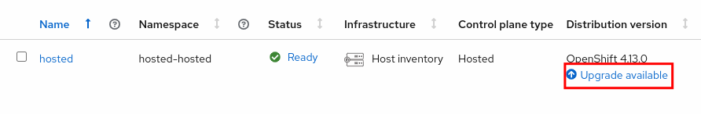
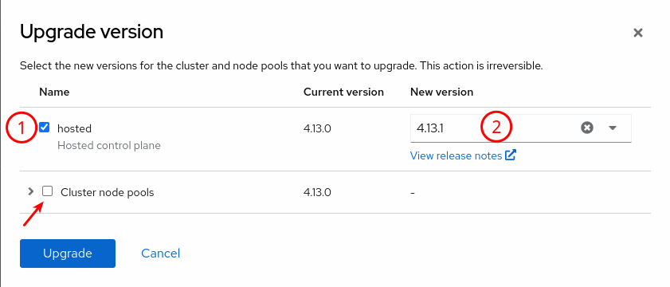
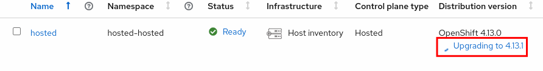
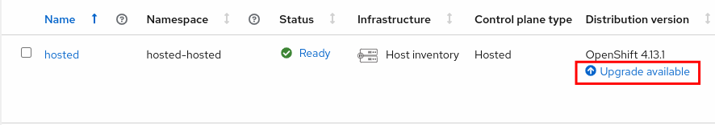
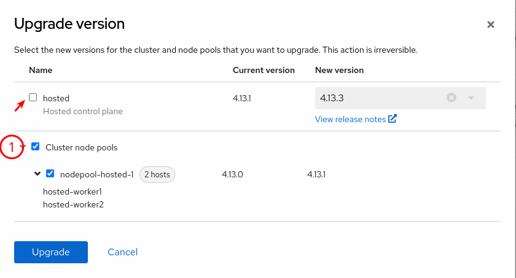

Updating the Hosted Cluster
Updating the Hosted Cluster from the WebUI
As previously stated, the Hosted Cluster Control Plane and Data Plane updates are decoupled, this means that they can be run at different times while staying within the Kubernetes Skew Policy. In this section we will see how we can run a decoupled updated from the WebUI. In the next section we will do an update from the CLI.
Updating the Hosted Cluster Control Plane from the WebUI
-
Access the OpenShift Console and login with the OpenShift admin credentials you got in the lab’s email.
-
On the top bar, next to the Red Hat OpenShift logo, make sure
All Clustersis selected. This will show us theMultiCloudconsole. -
Once you’re in, you should see a
Upgrade availablemessage next to thehostedcluster. -
Click on it and configure the control plane update to v4.13.1.
Make sure that you uncheck the Cluster node pools, otherwise the update will update both the control and the data plane. -
The update process will be reported on the WebUI.
Process may show Upgrade failing, give it some time to reconcile. -
The cluster will report version 4.13.1 after a few minutes (up to 10 minutes).
Updating the Hosted Cluster Data Plane from the WebUI
-
Once the control plane has been updated, we will still see the
Upgrade availablenotification. -
Click on it and configure the data plane update to v4.13.1.
Make sure that you uncheck the hostedcontrol plane. The data plane version must match the control plane version, you cannot choose a different one. -
We can follow the node update process from the CLI.
It can take a few minutes for the nodes to start updating oc --insecure-skip-tls-verify=true --kubeconfig ~/hypershift-lab/hosted-kubeconfig get nodes -o wideNAME STATUS ROLES AGE VERSION INTERNAL-IP EXTERNAL-IP OS-IMAGE KERNEL-VERSION CONTAINER-RUNTIME hosted-worker1 Ready,SchedulingDisabled worker 148m v1.26.3+b404935 192.168.125.31 <none> Red Hat Enterprise Linux CoreOS 413.92.202305041429-0 (Plow) 5.14.0-284.13.1.el9_2.x86_64 cri-o://1.26.3-3.rhaos4.13.git641290e.el9 hosted-worker2 Ready worker 147m v1.26.3+b404935 192.168.125.32 <none> Red Hat Enterprise Linux CoreOS 413.92.202305041429-0 (Plow) 5.14.0-284.13.1.el9_2.x86_64 cri-o://1.26.3-3.rhaos4.13.git641290e.el9 -
Once completed, the nodes will be running the newer version (RHCOS and CRIO versions changed).
oc --insecure-skip-tls-verify=true --kubeconfig ~/hypershift-lab/hosted-kubeconfig get nodes -o wideNAME STATUS ROLES AGE VERSION INTERNAL-IP EXTERNAL-IP OS-IMAGE KERNEL-VERSION CONTAINER-RUNTIME hosted-worker1 Ready worker 148m v1.26.3+b404935 192.168.125.31 <none> Red Hat Enterprise Linux CoreOS 413.92.202305231734-0 (Plow) 5.14.0-284.13.1.el9_2.x86_64 cri-o://1.26.3-7.rhaos4.13.gitb3475fb.el9 hosted-worker2 Ready worker 147m v1.26.3+b404935 192.168.125.32 <none> Red Hat Enterprise Linux CoreOS 413.92.202305231734-0 (Plow) 5.14.0-284.13.1.el9_2.x86_64 cri-o://1.26.3-7.rhaos4.13.gitb3475fb.el9 -
The NodePool should report the correct version as well.
oc --kubeconfig ~/hypershift-lab/mgmt-kubeconfig -n hosted get nodepool nodepool-hosted-1NAME CLUSTER DESIRED NODES CURRENT NODES AUTOSCALING AUTOREPAIR VERSION UPDATINGVERSION UPDATINGCONFIG MESSAGE nodepool-hosted-1 hosted 2 2 False False 4.13.1
Updating the Hosted Cluster from the CLI
In this section we will see how we can run the update from the CLI.
Updating the Hosted Cluster Control Plane from the CLI
-
Let’s get the hosted cluster updated from 4.13.1 to 4.13.3. We start with the Control Plane.
oc --kubeconfig ~/hypershift-lab/mgmt-kubeconfig -n hosted patch hostedcluster hosted -p '{"spec":{"release":{"image":"quay.io/openshift-release-dev/ocp-release:4.13.3-x86_64"}}}' --type mergehostedcluster.hypershift.openshift.io/hosted patched -
The Control Plane will start its update, we can check the update process on the hosted cluster by checking the cluster operators.
It may take a few minutes for the hosted cluster to report the update progress. oc --insecure-skip-tls-verify=true --kubeconfig ~/hypershift-lab/hosted-kubeconfig get clusteroperatorsNAME VERSION AVAILABLE PROGRESSING DEGRADED SINCE MESSAGE console 4.13.1 True False False 59s csi-snapshot-controller 4.13.1 True False False 143m dns 4.13.1 True True False 160m DNS "default" reports Progressing=True: "Have 1 available DNS pods, want 2.\nHave 1 up-to-date DNS pods, want 2.\nHave 1 available node-resolver pods, want 2."... image-registry 4.13.1 True False False 18m <OMITTED> operator-lifecycle-manager 4.13.3 True False False 171m operator-lifecycle-manager-catalog 4.13.3 True True False 171m Deployed 4.13.0-202305262054.p0.gce46f5b.assembly.stream-ce46f5b <OMITTED> -
Eventually, all cluster operators will be running 4.13.3 and the
ClusterVersionwill report that release.oc --insecure-skip-tls-verify=true --kubeconfig ~/hypershift-lab/hosted-kubeconfig get clusterversionNAME VERSION AVAILABLE PROGRESSING SINCE STATUS version 4.13.3 True False 1s Cluster version is 4.13.3
Updating the Hosted Cluster Data Plane from the CLI
-
Now that the control plane is running 4.13.3, let’s move the nodes to 4.13.3.
oc --kubeconfig ~/hypershift-lab/mgmt-kubeconfig -n hosted patch nodepool nodepool-hosted-1 -p '{"spec":{"release":{"image":"quay.io/openshift-release-dev/ocp-release:4.13.3-x86_64"}}}' --type mergenodepool.hypershift.openshift.io/nodepool-hosted-1 patched -
After a few minutes, nodes will start updating.
oc --insecure-skip-tls-verify=true --kubeconfig ~/hypershift-lab/hosted-kubeconfig get nodes -o wideNAME STATUS ROLES AGE VERSION INTERNAL-IP EXTERNAL-IP OS-IMAGE KERNEL-VERSION CONTAINER-RUNTIME hosted-worker1 Ready,SchedulingDisabled worker 3h v1.26.3+b404935 192.168.125.31 <none> Red Hat Enterprise Linux CoreOS 413.92.202305231734-0 (Plow) 5.14.0-284.13.1.el9_2.x86_64 cri-o://1.26.3-7.rhaos4.13.gitb3475fb.el9 hosted-worker2 Ready worker 179m v1.26.3+b404935 192.168.125.32 <none> Red Hat Enterprise Linux CoreOS 413.92.202305231734-0 (Plow) 5.14.0-284.13.1.el9_2.x86_64 cri-o://1.26.3-7.rhaos4.13.gitb3475fb.el9 -
Once completed, we can see both nodes are running a newer version (check the Node, RHCOS, Kernel and CRIO versions).
oc --insecure-skip-tls-verify=true --kubeconfig ~/hypershift-lab/hosted-kubeconfig get nodes -o wideNAME STATUS ROLES AGE VERSION INTERNAL-IP EXTERNAL-IP OS-IMAGE KERNEL-VERSION CONTAINER-RUNTIME hosted-worker1 Ready worker 3h9m v1.26.5+7a891f0 192.168.125.31 <none> Red Hat Enterprise Linux CoreOS 413.92.202306070210-0 (Plow) 5.14.0-284.16.1.el9_2.x86_64 cri-o://1.26.3-9.rhaos4.13.git9232b13.el9 hosted-worker2 Ready worker 3h8m v1.26.5+7a891f0 192.168.125.32 <none> Red Hat Enterprise Linux CoreOS 413.92.202306070210-0 (Plow) 5.14.0-284.16.1.el9_2.x86_64 cri-o://1.26.3-9.rhaos4.13.git9232b13.el9 -
The NodePool should report the correct version as well.
oc --kubeconfig ~/hypershift-lab/mgmt-kubeconfig -n hosted get nodepool nodepool-hosted-1NAME CLUSTER DESIRED NODES CURRENT NODES AUTOSCALING AUTOREPAIR VERSION UPDATINGVERSION UPDATINGCONFIG MESSAGE nodepool-hosted-1 hosted 2 2 False False 4.13.3